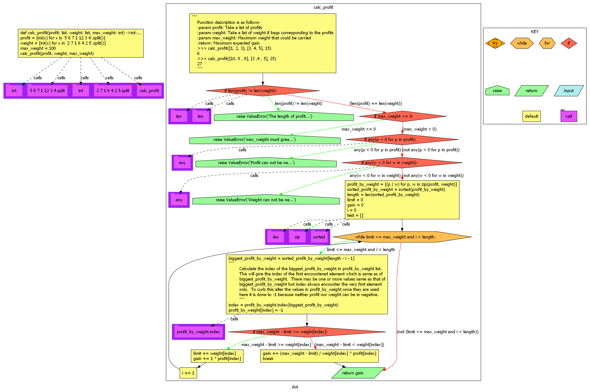

Open and collapse the accordian to see the summary
The source code is:
def main():
# Test input
number = 5
# Call the calculate_square function
result = calculate_square(number)
# Display the result
print(f"The square of {number} is {result}.")

32
number = 5
35
result = (number)
x = 5 is introduced.
28
return x ** 2
function calculate_square returned 25
number = 5 is introduced.
result = 25 is introduced.
38
print
Prints the values to a stream, or to sys.stdout by default.
sep
string inserted between values, default a space.
end
string appended after the last value, default a newline.
file
a file-like object (stream); defaults to the current sys.stdout.
flush
whether to forcibly flush the stream.